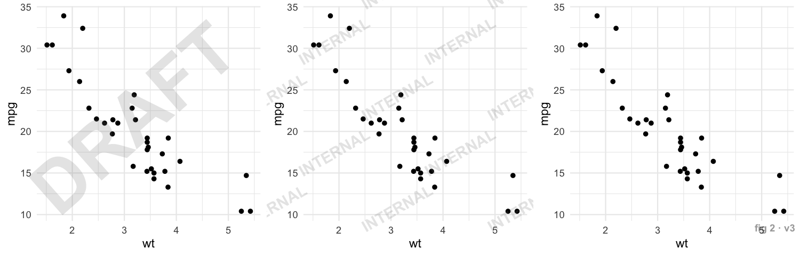
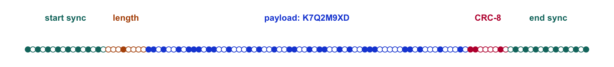

Trace a chart screenshot back to the run that made it.
Charts escape. They get screenshotted into slide decks, pasted into chat, re-saved as JPEGs and forwarded until nobody knows which script, which data pull or which version produced them. gglineage stamps each ggplot2 figure with an ID written as a faint row of dots in its bottom margin, and reads it back out of the pixels of any copy: a screenshot, a JPEG, a shrunken thumbnail. Log the ID when you save the plot, and every copy leads back to its run, code and data. The ID can be a short code or a full UUID.
![Animation in two panels. Left: a chat thread at 9:41. An account manager shares a chart screenshot from a client deck: the client wants to move ahead on it today, can we stand behind it? The analyst asks where it is from: to check it they need the client, study, run, data, script and output. Right: the same screenshot, a 623 by 426 pixel JPEG with no file metadata, and a ledger whose six rows turn to unknown. In an R console, extract_watermark() reads the screenshot: a reading head sweeps the two rows of dots in a magnified strip of the JPEG's own pixels, ringing each 1-bit of the ID as it passes, and the UUID 01a0f026-9e3e-729b-9cfa-87c8dd7bfb55 comes out. Looking the UUID up in a plots.csv manifest fills in all six rows. At 9:42 the analyst replies: found it, RET-104, run 2026-09-14-r03, data snapshot-2026-09-12.csv, checking the numbers now. A note says only the ID is in the pixels; the rest is the row logged when the plot was saved, with client, project and run as demo values.](reference/figures/lineage-mobile.gif)
A screenshot arrives with no context, and the client wants an answer today. The trace: extract_watermark() reads a full UUID out of the same JPEG (the strip is its own pixels around the two dot rows, magnified; the rings mark the ID’s 1-bits), and the UUID finds the row logged in plots.csv when the plot was saved. A minute after the question, the source run is found and checking the numbers can start. Only the ID is in the pixels; everything else comes from that log, with the client, project and run as demo values. The decode is real: made and checked by data-raw/lineage-demo.R, and you can repeat it on screenshot.jpg. Still image · Phone-sized version


Installation
gglineage is not on CRAN yet. Install it from GitHub:
# install.packages("pak")
pak::pak("despresj/gglineage")Thirty-second tour
library(ggplot2)
library(gglineage)
p <- ggplot(mtcars, aes(wt, mpg)) +
geom_point() +
watermark_dots("RUN-42") # just another + component
file <- tempfile(fileext = ".png")
ggsave(file, p, width = 7, height = 5, dpi = 150)
extract_watermark(file)
#> [1] "RUN-42"Now abuse it. Shrink it by half, pad it with window chrome like a screenshot, and push it through JPEG at quality 50:
img <- png::readPNG(file)
abused <- tf_jpeg(tf_pad(tf_resize(img, 0.5), 40), quality = 50)
extract_watermark(abused)
#> [1] "RUN-42"tf_resize(), tf_pad() and tf_jpeg() are the image transforms from the package’s stress-test suite.
The workflow: save, log, share, scan, look up
The dots carry the ID and nothing else. Lineage is whatever you record against that ID when you save the plot, so the workflow has two halves: a manifest row at save time, and a lookup whenever a copy turns up.
Save and log. ggsave_watermark() is a drop-in for ggsave(). Give it a UUID, and append a row to a manifest with everything you’ll want to know later:
manifest <- file.path(tempdir(), "plots.csv")
id <- wm_uuid(version = 7) # starts with a timestamp, so rows sort by time
file <- file.path(tempdir(), "retention-by-cohort.png")
ggsave_watermark(
file,
ggplot(mtcars, aes(wt, mpg)) + geom_point() + labs(title = "Weight vs MPG"),
id = id,
metadata = list(script = "analysis/fig2.R", commit = "9f3c2e1"),
width = 7, height = 5, dpi = 150
)
row <- data.frame(
id = id,
script = "analysis/fig2.R",
commit = "9f3c2e1",
data = "snapshot-2026-09-12.csv",
saved = format(Sys.time(), "%Y-%m-%dT%H:%M:%S")
)
write.table(row, manifest, sep = ",", row.names = FALSE,
col.names = !file.exists(manifest), append = file.exists(manifest))Share. The file goes into a deck, gets screenshotted, shrunk and saved as a JPEG by a chat app. Simulated here with the stress-test transforms:
screenshot <- tf_jpeg(tf_pad(tf_resize(png::readPNG(file), 0.6), 30),
quality = 60)Scan and look up. Weeks later, all anyone has is that screenshot:
found <- extract_watermark(screenshot)
found
#> [1] "01a0f9f4-c51c-7887-8add-ab0500888cbf"
plots <- read.csv(manifest)
plots[plots$id == found, ]
#> id script commit
#> 1 01a0f9f4-c51c-7887-8add-ab0500888cbf analysis/fig2.R 9f3c2e1
#> data saved
#> 1 snapshot-2026-09-12.csv 2026-10-01T20:12:43The row is yours to design: a CSV, a database table, a lab notebook. A row per saved plot, keyed by the ID, is all the lookup needs.
Two kinds of record
| Lives in | Survives a screenshot | Carries | |
|---|---|---|---|
| The ID | The pixels, as dots | ✅ | Up to 16 bytes of text, or a 128-bit UUID |
| The manifest row | Wherever you keep it, keyed by the ID | n/a | Anything: script, commit, data checksum, client, run |
PNG metadata (ggsave_watermark()) |
The saved PNG’s tEXt chunks |
❌ | The ID, a timestamp, the plot title, versions, fields you add |
PNG metadata is a lossless extra for when the original file itself is shared: read_watermark_metadata() gets it all back with no decoding. A screenshot or a re-encode drops it, and then the dots are what’s left.
What the ID is attached to
The ID belongs to the figure, not to rows of its data. gglineage does not track rows, columns or transformations: shuffling, filtering, joining, duplicating or perturbing the data before plotting neither changes the ID nor is changed by it, and the watermark never alters, reorders or drops the plot’s data. What the data was (a snapshot, a query, a checksum) is something you record in the manifest row.
-
One figure, one ID. Adding
watermark_dots()orwatermark_tiles()with a different ID to a plot that already carries one is an error, andggsave_watermark()refuses anidthat differs from the plot’s own (and uses the plot’s own whenidis left out), so a file’s metadata and its dots always name the same ID. -
Derived plots inherit the ID.
p + labs(...), orpgiven new data, is the same plot object as far as the watermark is concerned. To give each saved figure its own ID, keep the watermark off the shared plot and add it when saving, withggsave_watermark(). -
A decode names an ID that was drawn, or nothing. The strip’s checks are 32 bits (text) and 64 bits (UUID), so a damaged code is read as a wrong ID about once in 4 billion readings or less. An image holding several marked charts decodes to one of them, never to a mix; crop to the chart you mean. Mirrored, flipped and rotated images give
NULL. - Tiles are weaker. Their check is 16 bits, so a corrupted tile reading passes as a wrong ID about once in 65,000 tries (for example, a crop holding tiles of two charts with different IDs). Treat an ID read from tiles alone as a lead to confirm against your records.
-
IDs are taken literally. Case, spaces and Unicode form are kept byte for byte (
"RUN-1"and"RUN-1 "are different IDs); numbers, factors and other non-strings are refused rather than converted. Only UUIDs are normalised, to lowercase.
These properties are pinned by test-lineage-adversarial.R and the randomised test-lineage-fuzz.R, which CI runs on Linux, macOS and Windows, along with a larger fuzz campaign (tools/lineage-fuzz-campaign.R). In the latest campaign (seed 2027: 100,000 random IDs through the codec, 100,000 corrupted codes, 100,000 cross-joined UUID pairs, about 9,700 row repairs and 1,500 stacked, side-by-side, blended, cropped, recompressed and row-spliced images, including tiles-only charts) no decode returned an ID that was not drawn; see tools/lineage-fuzz-report.md.
ID formats
watermark_dots(), add_watermark() and ggsave_watermark() take the ID as a string and work out how to carry it:
| ID | Example | Rows of dots | Positions per row | Notes |
|---|---|---|---|---|
wm_id(): Crockford base32, 1–16 characters |
K7Q2M9XD |
1 | 77–152 (112 for 8 characters) | Packed at 5 bits per character. No I, L, O or U, so it survives being read aloud. |
| Free text, up to 16 UTF-8 bytes |
RUN-42, fig 2 (v3), café
|
1 | 80–200 | Stored as bytes; returned exactly as given. |
| UUID, any version | 6ba7b810-9dad-11d1-80b4-00c04fd430c8 |
2 | 136 each | All 128 bits. Input is case-insensitive and may be wrapped in {} or prefixed urn:uuid:; output is always lowercase. wm_uuid() makes version 4 or 7. |
Thirty-two hex digits without hyphens are rejected rather than guessed at (they could as well be an MD5), with a message saying to write the UUID as 8-4-4-4-12. Any text of 16 bytes or fewer is carried literally, so a text ID can never be mistaken for a UUID.
wm_id() # 8 characters, 40 bits
#> [1] "DX920S2K"
wm_uuid() # random (version 4)
#> [1] "f4206e0e-c079-49cb-b3af-9468df7bdef3"
wm_uuid(version = 7) # starts with the time in ms (version 7)
#> [1] "01a0f9f4-c719-7f3e-88c0-a6bcb6aecb1d"IDs come from the operating system’s secure random generator (/dev/urandom; on Windows, openssl::rand_bytes(), which needs the openssl package). With neither, wm_id() and wm_uuid() stop with an error instead of quietly using something weaker. set.seed() in your analysis won’t repeat them, and generating them won’t disturb your seed. An 8-character wm_id() is 40 random bits, fine for one team’s plots; when IDs from many people or machines share one record, use UUIDs.
Three kinds of watermark
| What it is | Survives screenshots | Carries | Use it for | |
|---|---|---|---|---|
watermark_dots() |
A faint row of dots in the bottom margin (two rows for a UUID) | ✅ | A short ID, or a full UUID | Tracing any copy back to its source |
watermark_text() |
A visible stamp: diagonal, tiled, or corner | ✅ | Whatever you write | Deterring reuse: "DRAFT", "CONFIDENTIAL"
|
ggsave_watermark() |
Dots plus PNG metadata | Dots only | ID, timestamp, title, versions, any fields you add | The full provenance record for the original file |
All three are drawn relative to the whole figure, never the data. They don’t touch your scales, axes, coordinate system or facets, and they work the same on coord_flip(), coord_polar(), facet_wrap() and discrete axes.
Visible stamps
base <- ggplot(mtcars, aes(wt, mpg)) + geom_point() + theme_minimal()
stamps <- list(
base + watermark_text("DRAFT"),
base + watermark_text("INTERNAL", position = "tile"),
base + watermark_text("fig 2 · v3", position = "bottomright")
)
Visible text stays out of the strip reserved for the dot code, so you can stack a stamp and the dots in any order.
How the dot code works

Each dot position is one bit; a dot means 1, a gap means 0. A row is:
-
Start sync,
1010…: eight evenly spaced dots. The decoder uses them to lock on and measure the pitch, so it doesn’t care about image size. -
Header: what the payload is. Text IDs made only of
wm_id()’s 32 characters take 5 bits each; other text is stored as UTF-8 bytes; the two halves of a UUID have codes of their own. Unknown codes are rejected. - Payload, then a 32-bit check: two CRC-16s over the header and payload.
-
End sync,
…0101. The row’s first and last bits are both 1, so the outermost dots mark its edges.
A UUID is two such rows, one above the other, each checked on its own and against the other, and returned only together.
Decoding scans the image row by row. It compares pixels with their local neighbourhood (so borders and UI chrome don’t confuse it), locks onto the start sync, and reads each bit by interpolating between pixels, against the paper level on the far side of the dots, with the threshold set by how the sync dots actually read. Rows too faint to read alone are averaged with their neighbours. As a last resort it reads the row where watermark_dots() always draws it, a fixed fraction of the way across the figure, which rescues images too small or compressed to find the dots one by one.
A row is accepted only if both syncs, the header and the 32-bit check all agree. A damaged row slips past that about once in four billion readings, so a decode is exact or NULL: it doesn’t guess. A UUID’s two rows split their check bits: 16 check a row on its own, and 16 check it against the whole UUID, with a different CRC on each row. A UUID comes back only when all 64 check bits agree, so the halves of two different UUIDs (charts stacked in a report, or a copy pasted over another) are never joined; the decoder moves on and returns an intact code or nothing.
How tough is it?
A 7 × 5 in plot saved at 150 dpi, carrying the 8-character ID K7Q2M9XD, pushed through 37 transformations. Every row is recomputed each time this README is knit, and the same matrix runs in test-robustness.R on every push, on several plot types and with a second ID, RUN-42. Longer IDs reach their limits sooner; see Measured limits.
| Transformation | Pixels | Dot code | Tiles | |
|---|---|---|---|---|
| Lossless | Original PNG | 1050 × 750 | ✅ recovered | ✅ recovered |
| PNG re-save | 1050 × 750 | ✅ recovered | ✅ recovered | |
| Compression | JPEG quality 95 | 1050 × 750 | ✅ recovered | ✅ recovered |
| JPEG quality 75 | 1050 × 750 | ✅ recovered | ✅ recovered | |
| JPEG quality 50 | 1050 × 750 | ✅ recovered | ✅ recovered | |
| JPEG quality 25 | 1050 × 750 | ✅ recovered | ✅ recovered | |
| JPEG q75, re-encoded 10 times | 1050 × 750 | ✅ recovered | ✅ recovered | |
| JPEG -> PNG -> JPEG | 1050 × 750 | ✅ recovered | ✅ recovered | |
| Resize | Downscale to 75% | 788 × 562 | ✅ recovered | ✅ recovered |
| Downscale to 50% | 525 × 375 | ✅ recovered | ✅ recovered | |
| Upscale 2x (retina) | 2100 × 1500 | ✅ recovered | ✅ recovered | |
| Odd scale 0.83x | 872 × 622 | ✅ recovered | ✅ recovered | |
| Downscale to 640 px wide | 640 × 457 | ✅ recovered | ✅ recovered | |
| Downscale to 15% | 158 × 112 | ✅ recovered | ✖ not found | |
| Crop & frame | Crop top 30% | 1050 × 525 | ✅ recovered | ✅ recovered |
| Pad with light UI chrome | 1170 × 870 | ✅ recovered | ✅ recovered | |
| Pad with dark UI chrome | 1170 × 870 | ✅ recovered | ✅ recovered | |
| Screenshot chain (2x, pad, 0.5x, JPEG 80) | 1130 × 830 | ✅ recovered | ✅ recovered | |
| Colour | Brightness +5% | 1050 × 750 | ✅ recovered | ✅ recovered |
| Contrast 70% | 1050 × 750 | ✅ recovered | ✅ recovered | |
| Gamma 1.8 | 1050 × 750 | ✅ recovered | ✅ recovered | |
| Grayscale | 1050 × 750 | ✅ recovered | ✅ recovered | |
| Inverted (dark mode) | 1050 × 750 | ✅ recovered | ✅ recovered | |
| Posterize to 32 levels | 1050 × 750 | ✅ recovered | ✅ recovered | |
| Degrade | Gaussian noise sd 0.01 | 1050 × 750 | ✅ recovered | ✅ recovered |
| Box blur radius 1 | 1050 × 750 | ✅ recovered | ✅ recovered | |
| Social re-share (0.6x, JPEG 70, x3) | 630 × 450 | ✅ recovered | ✅ recovered | |
| Small + compressed | Shrink to 520 px wide + JPEG 35 | 520 × 371 | ✅ recovered | ✖ not found |
| Shrink to 430 px wide + JPEG 50 | 430 × 307 | ✅ recovered | ✖ not found | |
| Shrink to 360 px wide + JPEG 50 | 360 × 257 | ✅ recovered | ✖ not found | |
| Past the limits | Crop bottom 5% | 1050 × 713 | ✖ not found | ✅ recovered |
| Crop left 10% | 945 × 750 | ✖ not found | ✅ recovered | |
| Rotate 90 degrees | 750 × 1050 | ✖ not found | ✖ not found | |
| Brightness +15% (dots clip to white) | 1050 × 750 | ✖ not found | ✖ not found | |
| JPEG quality 5 | 1050 × 750 | ✖ not found | ✖ not found | |
| Shrink to 240 px wide + JPEG 50 | 240 × 171 | ✖ not found | ✖ not found | |
| Downscale to 10% | 105 × 75 | ✖ not found | ✖ not found |
Dot code: 30 of 37 recovered exactly. Tiles: 28 of 37. Wrong IDs across both: 0. The rows under “past the limits” are outside what the package promises: they fail for this ID, and where each limit falls depends on the ID’s length. The tests ask only that a result there is exact or NULL, never a wrong ID.
Measured limits
Pixel width is what matters (the dots scale with the figure), so the limits below are for this 7 × 5 in figure shrunk to a given width. Each JPEG entry is the narrowest width at which every one of 12 trials (6 random IDs × 2 plot types) decoded; just below it some decodes return NULL, never a wrong ID. The full tables are in tools/uuid-design.md.
| Treatment | 8-character wm_id()
|
UUID |
|---|---|---|
| Lossless copy, shrunk | 120 px | 150 px |
| JPEG quality 75 | 240 px | 320 px |
| JPEG quality 50 | 300 px | 400 px |
| JPEG quality 35 | 320 px | 480 px |
| Window chrome around the figure, JPEG quality 50 | 400 px | 480 px |
| Retina screenshot, shrunk, JPEG quality 80 | 280 px | 280 px |
At full size (1050 px), JPEG holds down to about quality 8 for this 8-character ID and quality 10 for this UUID; the exact floor varies from ID to ID. A UUID’s two rows have more, smaller dots than a short ID’s one, so it needs about a third more width under JPEG, and more again inside a padded screenshot.
Longer IDs need more width. Every character adds dots to the row, so the dots sit closer together and merge sooner. Measured the same way, as the worst of 8 trials (4 random IDs × 2 plot types) for each kind of ID, by tools/id-length-floors.R:
| ID | Dot positions | Lossless copy, shrunk | JPEG quality 50 |
|---|---|---|---|
12-character wm_id()
|
132 | 150 px | 360 px |
16-character wm_id()
|
152 | 170 px | 430 px |
| 16 bytes of free text | 200 | 230 px | 560 px |
Compare 120 px and 300 px for an 8-character wm_id(). A full 16 bytes of free text needs nearly twice the width of an 8-character wm_id() under JPEG; for charts that will travel as small screenshots, use wm_id() or a UUID.
Passed around: UUIDs through real sharing chains
A screenshot rarely makes one hop. To test that, each trial in tools/uuid-sharing-hammer.R puts a chart with a fresh random UUID through a chain of one to five real hops, decoding after every one:
- Browser screenshots: headless Chrome at 360–1000 CSS px and 1×/2×/3×, on white, light-grey and dark (GitHub, Slack) pages.
- Phone screenshots: 390 pt at 3×.
- Crops: the chart cropped back out of a screenshot.
- Chat and social recompression: Slack, X, WhatsApp, Teams and email JPEGs, iMessage HEIC, Discord WebP.
- A retina image halved: pasted into a document.
The decoder has to cope with all of it: page colours around the chart, a chart that is a small part of a huge screenshot, and bits lost to repeated compression, which it repairs (see below).
Results from the latest run (400 chains, nine plot types, 1,110 decodes), grouped by the narrowest the chart got anywhere along its chain (detail lost while a chart is shown small doesn’t come back when a later screenshot shows it larger) and by how many lossy hops it went through:
| Narrowest chart width | After 0–1 lossy hops | After 2+ lossy hops |
|---|---|---|
| 640 px or more | 665 of 665 (100%) | 30 of 30 (100%) |
| 560–640 px | 52 of 52 (100%) | 15 of 15 (100%) |
| 480–560 px | 77 of 81 (95%) | 9 of 12 (75%) |
| under 480 px | 121 of 214 (57%) | 11 of 41 (27%) |
Keep the chart at least about 560 px wide, roughly a phone screen or half a laptop window, and the UUID survived every chain tested, up to five hops of screenshots, crops and recompression. Below that, recovery falls off gradually.
A failed decode returns NULL. Across four full campaigns (about 4,450 decodes) and the adversarial runs (pairs of charts with different UUIDs, stacked, cropped through and compressed hard), no decode has ever returned a wrong UUID. The full report, every hop type and every miss, is in tools/uuid-sharing-report.md.
Repair. A UUID row that loses a few bits to compression is repaired from the bits read least confidently. CRCs are linear, so candidate repairs are tested against the check bits directly. A repair is accepted only if the row’s own check and both rows’ pair checks over the whole UUID agree: at least 48 check bits, which leaves about a 1-in-10¹¹ chance of a wrong row. Text IDs have one row and no partner to confirm a repair, so they are never repaired.
What fails
- Anything through the dot strip. Cropping the bottom edge or either side removes part of a row; there is no partial recovery, and half a UUID is never returned.
- Rotation. Rows are scanned horizontally. Rotate the image back first.
- Too small. Below the widths above the dots merge. Even a lossless copy stops decoding at about 120 px (8-character ID), 150 px (UUID) or 230 px (16 bytes of free text), where the dots are under two pixels apart. Ask for the original.
- Small and padded and compressed. A tiny screenshot with window chrome around it, saved at a low JPEG quality, fails below about 400 px (480 px for a UUID).
-
Brightening past about +10% clips the faint dots to white. Raise
alphaif your plots will be edited heavily.
When it fails, it fails to NULL. Across every sweep behind this README, no transform has ever produced a wrong ID.
When images get cropped: tiles
The strip lives in the bottom margin, so a crop that removes it removes the ID. watermark_tiles() repeats the whole ID (up to 12 bytes, so a short ID rather than a UUID), with its own CRC-16, in a faint 12 × 12 grid of dots behind the data in every panel. A tile is 36 mm square, and a crop that keeps about two tiles across in each direction still decodes: in the real-world tests that meant about 80 mm square of open panel on a plain scatter, more on busy plots. extract_watermark() tries the tiles whenever no strip is found.
ggplot(mtcars, aes(wt, mpg)) + geom_point() + watermark_tiles("K7Q2M9XD")Tiles need open panel between the data: a plot whose data fills the whole panel (a heatmap) leaves nothing to read. On a dark panel, use colour = "white". Figures smaller than about 5 × 4 in hold too few tiles at the default pitch; use watermark_tiles(id, pitch = 2, size = 0.7) for those, saved at 150 dpi or more.
Tiles are less robust than the strip, and the limits are worth knowing:
-
Each panel needs room. Tiles are read per panel, so a
facet_grid()of small panels (under about 70 mm each) doesn’t decode even though the figure as a whole is large. - Busy panels can defeat them, depending on the ID. Tiles have a checksum but no error correction, so if lines and gridlines cover the same few cells in every tile, some IDs fail where others pass.
- Dark panels with light gridlines often don’t decode.
- A weaker check. A tile’s CRC-16 lets a corrupted reading through as a wrong ID about once in 65,000 tries, where the strip’s checks make that about once in 4 billion or less. Confirm an ID read from tiles alone against your records.
Use both watermarks when you can; the strip wins if both are present.
Provenance, not security
Watermarks here are for provenance. Anyone who knows the dots are there can crop or paint over them, and the dots make no claim about the chart’s conclusions: they get you back to the run, and checking the run is still your job. The point is that ordinary sharing doesn’t destroy the trail.
Related work
- ggplot2, which this extends.
- Steganography packages hide data in the least significant bits of pixels, which a single JPEG pass or screenshot destroys. gglineage trades capacity for survival.
Contributing
Bug reports and ideas are welcome in the issue tracker. Run the test suite with devtools::test(); the robustness matrix lives in tests/testthat/test-robustness.R.